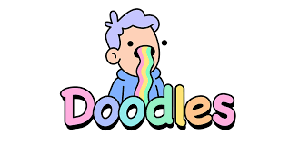
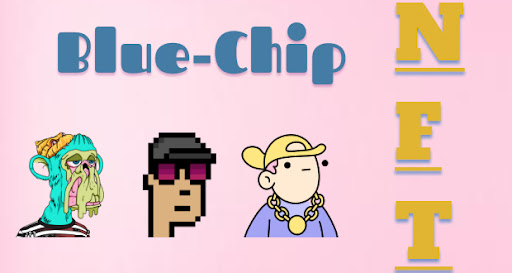

By Josh Siegel
Published October 27, 2022

Doodles is one of the most notable NFT pfp projects out right now. Doodles is designed by Burnt Toast, an artist from Vancouver. His fun designs make this something that people of all ages can appreciate. Doodles started off with an artist and some team members, but over the past few months they have added some big names to the team. They hired a CEO named Julian Holguin, who was previously a president at Billboard. His experience with music and entertainment will bring many utilities and experiences to Doodle owners. Another move the team made was adding Pharrell as the Chief Brand Officer. This is one of the biggest names in music joining the team, so there are rumors that a Doodles album will be released in the near future. This album will be produced by Pharrell, and the album artwork will be done by Burnt Toast. Doodles are not a cheap buy for anyone, but they should be at the top when it comes to the future of NFTs. They are currently priced at a floor price of 8 eth, which is around 11,000 U.S. dollars. They reached a peak of 25 eth, which at the time was around 75,000 U.S. dollars.
By Josh Siegel
Published October 27, 2022

NFTs have been around for some years now, but they started becoming popular a couple years ago. There are different types of blockchain NFTs. We see Solana and Ethereum powered NFTs mainly as the ones that are most popular. Flow chain is also creating some cool NFTs. The most popular flow NFTs are NBA Top Shot, BALLERZ, Hoodlumz, and NFL ALL DAY. These will hopefully gain more popularity as we enter the next bull cycle. Some of the most popular ETH NFTs are CryptoPunks, Bored Apes, Doodles, CloneX, Azuki, and Mutant Apes. Most of these, if not all, should have a huge impact on the future of ETH NFTs. These should be the blue chips for the future. Holding one of the top NFTs will be like buying Apple or Amazon stock in the early stages of the company. NFTs have the ability to take over the world. We could see tickets for concerts, games, and other events become NFTs, and a lot of artwork is being made into NFTs to prove it is real and it can’t be destroyed. It is amazing to see that NFTs have finally gotten a lot of recognition over the past year because they will probably be a large part of our lives for years to come.
| Bluechip NFT | ||
|---|---|---|
| Doodles | CryptoPunks | Bored Apes |